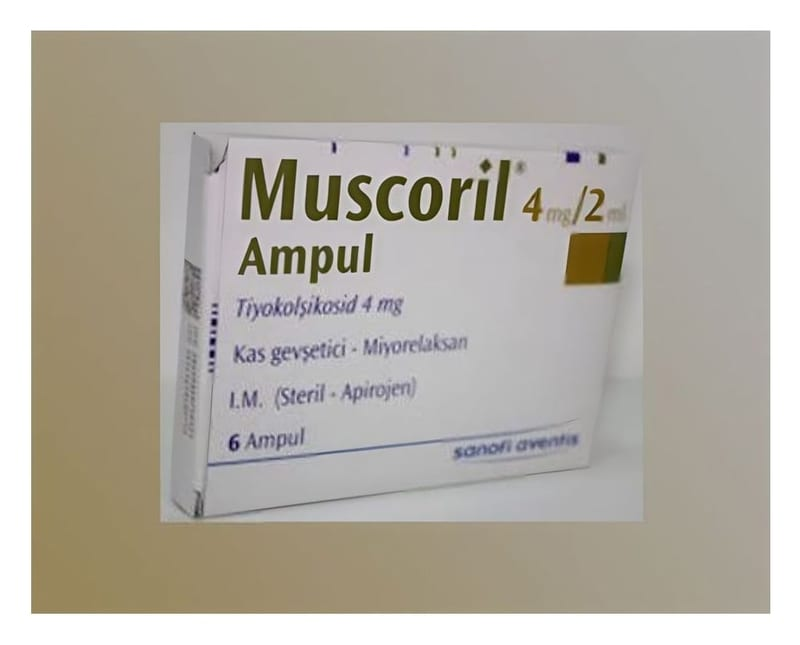

Muscoril 4 mg/2 ml Enjeksiyonluk Çözelti, 6 Adet

Ne için kullanılır
KT · Bölüm 1MUSCORİL, 2 mL’lik ampul formunda olup 4 mg tiyokolşikosid etkin maddesini içerir. Her bir kutuda 2 mL’lik 6 adet ampul bulunmaktadır.
MUSCORİL esas olarak kas gevşetici etkinliğe sahiptir. MUSCORİL, yetişkinlerde ve 16 yaştan itibaren ergenlerde ani ortaya çıkan omurilik kaynaklı ağrılı kas kasılmalarının ek tedavisinde kullanılır.